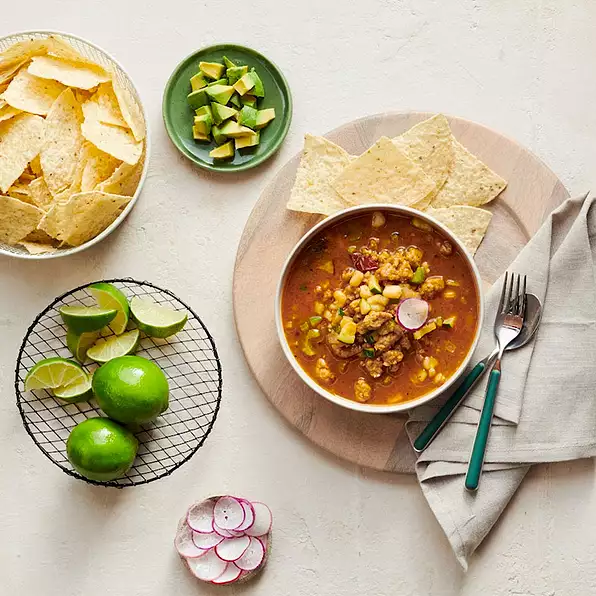

Pozole

Description
Pozole from Nahuatl languages: pozoll , meaning cacahuazintle, a variety of corn or maize) is a traditional soup or stew from Mexican cuisine. It is made from hominy with meat (typically pork, but possibly chicken), and can be seasoned and garnished with shredded lettuce or cabbage, chile peppers, onion, garlic, radishes, avocado, salsa or limes. Known in Mesoamerica since the pre-Columbian era, today the stew is common across Mexico and neighboring countries, and is served both as a day-to-day meal and as a festive dish.
Pozole can be prepared in many ways, but all variations include a base of cooked hominy in broth. Typically pork, or sometimes chicken, is included in the base. Vegetarian recipes substitute beans for the meat.
Ingredients
- 3 tablespoons olive oil, divided
- 1 small yellow onion, peeled and diced (about 1 cup diced)
- 2 stalks celery, chopped (1/2 cup)
- 4 cloves garlic, peeled and chopped
- 1 medium zucchini, diced (about 2 cups diced, about 10 oz whole)
- 1 pound Pure Farmland® Simply Seasoned Plant-Based Protein Starters
- 1 ancho chile in adobo sauce
- 3 tablespoons adobo sauce from can
- 1 teaspoon ground cumin
- 1 teaspoon mild chile powder
- 6 cups low-sodium vegetable broth
- 1 (15 ounce) can yellow hominy, drained
- 2 leaf (blank)s bay leaves
- ½ teaspoon dried Mexican oregano
- 1 pinch Kosher salt, as desired
Steps
- Heat a large Dutch oven or pot over medium heat. Add 2 tablespoons olive oil, then onion, celery and garlic. Cook 3 minutes, stirring occasionally, then add the zucchini. Cook 5 more minutes, until zucchini is slightly softened, then remove from heat. Transfer vegetables to a plate and reserve.
- Return pot to medium heat. Add remaining 1 tablespoon olive oil, then Protein Starter. Using a wooden spoon, break apart into pieces about 1/2-inch big. Cook 8 to 10 minutes or until Protein Starter is lightly golden. Add ancho chile, adobo sauce, ground cumin, and chile powder. Cook 2 more minutes, breaking up ancho chile with spoon.
- Add vegetable broth, hominy, bay leaves, oregano, and reserved vegetable mixture. Bring to a simmer over medium-high heat, then reduce to medium-low heat and cook 10 to 12 minutes or until vegetables are tender. Season with kosher salt, if desired.
- To serve, top with cilantro leaves, diced avocado, and radishes. Serve with lime wedges and tortilla chips, if desired.